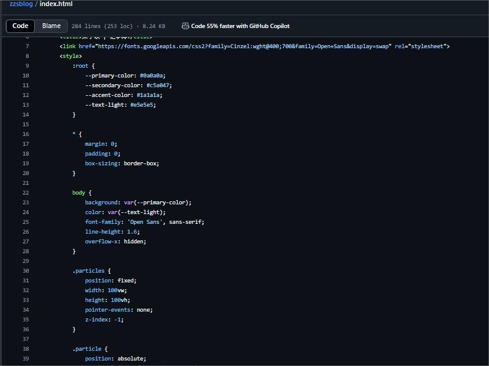

晴空如洗 · 微风和煦
乙巳年五月初一
时维公元二〇二五年五月一日
晨光初露，执笔启卷，记此佳日。
【晨起】
晨寤巳时正，遨戏少顷，闲极乃筑云阁以自娱。
【午寐】
午倦复眠，及寤自忖：朱子硕者，岂非睡觉大王耶？哑然失笑，遂作此诗。
睡觉 （现-朱子硕） 睡觉睡觉睡觉，牛哔牛哔牛哔。 我要我要我要，睡觉睡觉睡觉。
【格物】

乙巳年自建个人博客图
【暮省】
是日所获颇丰，然学业未达预期，当于改日补之。夜窥天垣，文昌六曜煌煌并耀，似玉衡列斗而昭文运；奎光贯霄，紫气东来而映华章。
朱子硕 书于家中
🖋️